QF5210
GROUP PROJECT
THE
Quadrant
Strategy.
Four Market Structures
One book, four engines, each earning a different kind of return.
1.39 Sharpe · 21.4% CAGR · −14.9% Max DD · +1.42% in Oct 2026 (+18.7% annualised)
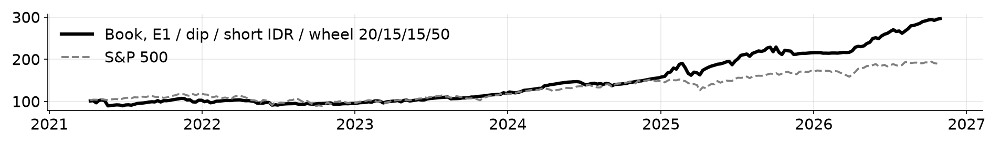
The book
Equity curve, Apr 2021 to Oct 2026, net of costs. +196.4% total
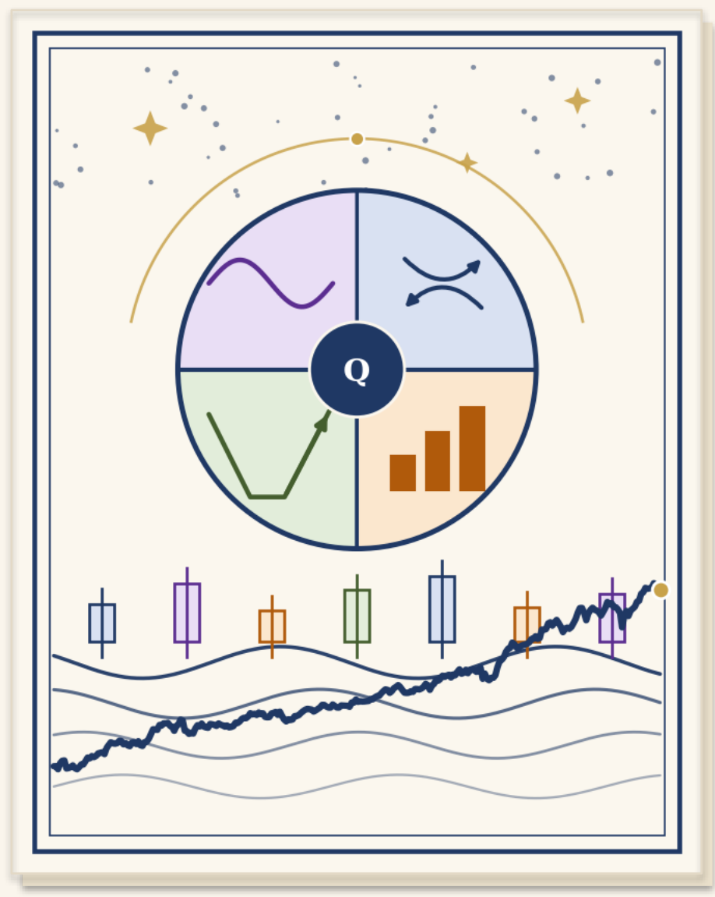
Andrew Wiraatmaja · Edward Sujono · Michael Japardi · Victoria Chan · Wielly Halim
QF5210 · Financial Time Series · Oct 2026
SPEAKER 1 · ANDREW
THE HOOK · WHY THIS BOOK, WHY NOW
Tariffs, a yen unwind, a crypto winter
Five very different markets in five years. Each paid one kind of strategy and punished another. Here is which sleeve did what.
2021–22 · Crypto winterBitcoin fell 74% from its peak. Anyone who just held it took the whole loss.
The wheel: max drawdown −28%, against −74% for the coin; 2022 −16.6% vs −64.2%.
2022 · The rate shockStocks and bonds fell together, so the usual hedge did not work.
Short IDR +8.6% as the dollar rallied. E1 −2.2%, dip sat in cash (−1.2%). Book: −7.3% vs S&P 500 −19.4%.
Aug 2024 · The yen unwindThree days of forced selling worldwide when the yen carry trade unwound.
The dip sleeve bought it (+5.7%); wheel −3.4%, short IDR flat (dollar filter off). Book: −0.6%.
Apr 2025 · The Trump tariff shockTariffs announced, paused and announced again within weeks.
The dip sleeve bought the tariff dip (+13.7% over 1–11 Apr); wheel +4.6%. Book: +3.6%.
Oct 2026 · The live window1 to 30 Oct: S&P 500 −0.9%, Bitcoin −6.9%, chip sell-off mid-month.
Wheel +5.3%, short IDR +1.6%, E1 −0.5%, dip −9.3%. Book: +1.42% (+18.7% annualised).
No one strategy did well in all five. The book is built so that one piece of news cannot hurt every sleeve at the same time.
2
SPEAKER 1 · ANDREW
THE BOOK · WHY FOUR ENGINES
Why a book, not a strategy
| Sleeve | Premium | Market | What kills it |
|---|
| 1. Mean reversion | Relative value | SGX + US equities | Crowding; regime change |
| 2. Crypto wheel | Volatility | BTC and HYPE options | A bear that whipsaws the 200-day rule |
| 3. Short IDR | Emerging-market currency risk | USD/IDR forwards | A rupiah rally while the dollar is rising |
| 4. Dip buying | Short-term reversal | Nasdaq-100 equities | A bear that keeps dipping; no stop loss |
Why they combine- Correlation between any pair of sleeves: −0.09 to +0.15 (Apr 2021 to Oct 2026)
- Different, but not fully independent: the wheel moves with crypto, short IDR with the dollar
- Sized with those links in mind, the book does better than any sleeve alone
The weakness they share- Sleeves 2 and 4 both lose when markets fall
- What holds up in a crash: E1 barely moves with markets (R² 0.03); short IDR made +8.6% in 2022; the dip sleeve sat in cash (−1.2% in 2022)
- The last defence is the book brake (slide 11)
1.39Book Sharpe (common window)
≤ 0.15Highest pairwise sleeve correlation
+1.42%October 2026 (+18.7% annualised)
−14.9%Book max drawdown
3
SPEAKER 2 · EDWARD
SLEEVE 1 · RELATIVE VALUE
Mean reversion engine (PCA statistical arbitrage)
0.67Sharpe, net (2019–2026)
−9.1%Max drawdown
1,551Trades · 59.3% win rate
0.08Sharpe since 2024: the edge is fading
Frozen spec- 34 large caps (9 SGX + 25 US); strip out market and sector moves (3 PCA factors, 60 days)
- What is left is the stock's own move, which drifts above and below zero: the residual
- The s-score says how far from zero it is now, in standard deviations (an OU fit)
- Trade when stretched by 1.5, close when back within 0.5, stop if it passes 3.5
- Only stocks that normally snap back within 30 days (half-life); 10 bps per weight change
| Net results, Apr 2019 to Oct 2026 |
|---|
| Return | 5.7%/yr |
| Sharpe | 0.67 |
| Volatility | 8.5% |
| Max drawdown | −9.1% |
| Trades / win rate | 1,551 / 59.3% |
| Avg hold / profit per trade | 11.9 days / +2.7 bps |
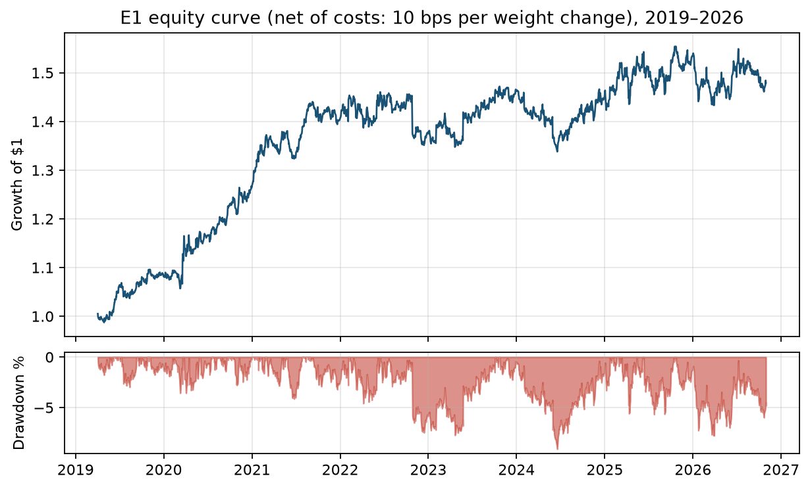
• Equity curve and drawdown, net of costs
• Made money through the 2020 crash; 2022 only −2.2%
• The flat years are the recent ones
Lecture exhibits: factor attribution (A6) · cointegration and residual diagnostics (A8)
Its weakness, stated plainly: the edge is real but fading, so this sleeve is the book's steady 20%, not where the return comes from.
4
SPEAKER 2 · EDWARD
SLEEVE 2 · VOLATILITY PREMIUM
Crypto options wheel (BTC, then HYPE)
1.17 vs 0.74Sharpe vs buy-and-hold
−28% vs −74%Max DD vs buy-and-hold
−17% vs −64%2022: wheel vs BTC
≈17%1-week 99% expected shortfall (A7)
Mechanism
- Every Friday, sell a 25-delta option with 1 week to expiry
- Holding no coin: sell a put, fully backed by cash. Holding the coin: sell a call against it
- Apr 2021 to Jan 2025: Bitcoin, priced off Deribit's DVOL index
- From Jan 2025: 70% HYPE (A9) + 30% Bitcoin, rebalanced quarterly; cash at T-bill
- Coin below its own 200-day average at a Friday close: BTC leg halves, HYPE leg exits, into T-bills
| Sharpe | CAGR | Max DD |
|---|
| Always-on wheel, no trend rule | 1.14 | 40.1% | −43.4% |
| Always-on, 200d rule per coin (adopted) | 1.17 | 34.3% | −28.3% |
| Buy and hold, same coins | 0.74 | 31.2% | −74.3% |
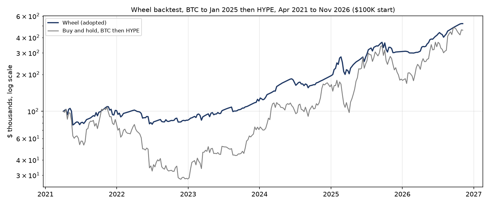
The wheel against buy-and-hold of the same coins, log scale. The rejected first design is in A3.
Lecture exhibits: tail risk, EVT (A7) · the coin screen (A9)
Sells every week, cuts back in bears: the wheel sells an option every week it is on. Below its 200-day average, BTC runs at half size and HYPE stops, so a long bear market cannot wipe out the thinner coin. CAGR 34.3% from Apr 2021; 40.1% without the rule.
5
SPEAKER 3 · WIELLY
SLEEVE 3 · EMERGING-MARKET CURRENCY RISK
Short rupiah (USD/IDR forwards)
+1.6%October 2026 (+21% annualised)
0.55Sharpe 2015–2026 (0.02 without the dollar filter)
+8.6% · +5.0%2022 and 2026: emerging-market stress years
52%Time in the market; 3.0%/yr carry while on
Design- Bet the rupiah weakens: long USD/IDR at 1× through 1-month forwards, rolled monthly
- Keep the position only while the dollar index is up over the last 21 trading days; otherwise close it and sit in cash
- Checked daily, acted on the next day: in the market 52% of the time, about 22 switches a year
- Cost: the 3%/yr rate gap while on, 3 bps per roll, 5 bps per switch
| Sharpe | CAGR | Max DD |
|---|
| Short IDR, dollar filter, 2015–2026 | 0.55 | 2.8% | −9.4% |
| Short IDR, dollar filter, common window | 0.86 | 3.7% | −5.4% |
| Always-on short, no filter, 2015–2026 | 0.02 | −0.1% | −24.1% |
Findings- Always on, it earns nothing: the carry eats the rupiah's slide (Sharpe 0.02 since 2015)
- It pays when emerging markets get sold: +10.6% in 2015, +8.6% in 2022, +5.0% in 2026
- October chip sell-off week: +1.1%
- USD/IDR's own trend fails as a filter: it spikes, then reverses (A3)
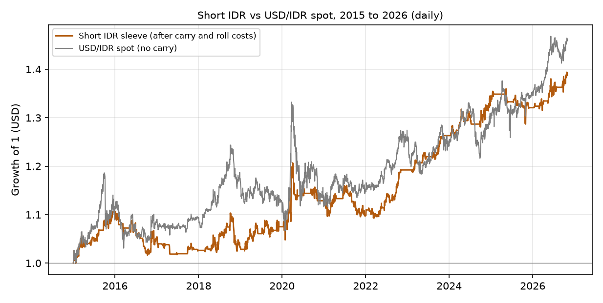
• Grey: USD/IDR spot. Orange: the sleeve, 2015 to 2026
• Flat stretches: the filter is off. The rest of the gap is carry
Carry is an assumption: Bank Indonesia's rate sat about 1 to 7 points above US bills over the period; 3.0% is a mid estimate. · Exhibits: A6 · A7
Insurance with a known cost: the sleeve earns when the rupiah breaks, and pays the carry only while the dollar is already moving our way.
6
SPEAKER 3 · WIELLY
SLEEVE 4 · SHORT-TERM REVERSAL
Dip buying, Nasdaq-100
1.07Sharpe, long run 2015–2026
1.61Sharpe since 2024
−1.2%2022: sat the bear market out
≈11%Average capital use
Design (our rebuild of a published rule set)- Nasdaq-100 names above their 200-day average
- Signal: 1-day drop > 3% at high ATR → next-day limit buy 0.9×ATR below the close
- Exit: +0.5×ATR target, close above prior day's high, or day 11
- Max 10 positions; no stop loss
| Long run 2015–2026 | Sharpe 1.07 daily (1.46 weekly), CAGR 14.9% |
| Trades / win rate / hold | 867 / 69.7% / 4.7 days |
| Max drawdown | −12.2% |
| October 2026, 1–30 Oct | −9.3% |
| Since 2024 (published test window) | Sharpe 1.61, CAGR 37.0% (to 30 Oct 2026) |
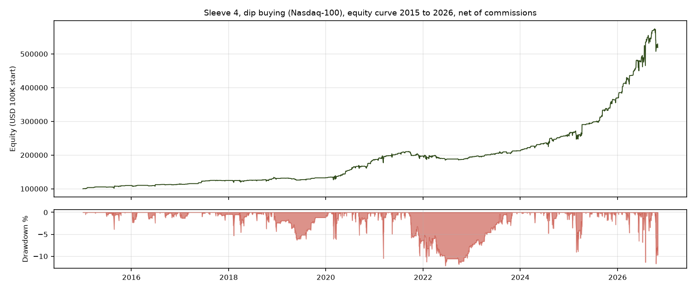
• Equity and drawdown, 2015 to 2026, after IBKR commissions
• Flat stretches: no qualifying dips, no trades
• Universe: today's constituents (slide 10)
Lecture exhibits: factor attribution (A6) · tail risk, EVT (A7)
It survives bear markets by staying out of them: the 200-day filter keeps it in cash once dips turn into a downtrend. Its weak spot is the opposite case, a crash that starts at all-time highs, as the Oct 2026 chip sell-off showed (−11.2% in a week).
7
SPEAKER 4 · MICHAEL
PORTFOLIO · CONSTRUCTION
The book holds up when its parts fall
1.39Book Sharpe (common window)
−7.3%2022: BTC −64%, equities −19%
−14.9%Book max drawdown
+0.16Book equity beta (A6)
- Weights, rebalanced quarterly: E1 20% · Dip 15% · Short IDR 15% · Wheel 50%
- Common window: Apr 2021 to Oct 2026 (291 weeks), all in USD
| Sharpe* | CAGR | Vol | Max DD |
|---|
| E1 | 0.23 | 1.6% | 8.1% | −8.4% |
| DIP | 1.46 | 18.8% | 12.3% | −12.0% |
| Short IDR | 0.86 | 3.7% | 4.3% | −5.4% |
| Wheel | 1.17 | 34.3% | 28.9% | −28.3% |
| BOOK | 1.39 | 21.4% | 14.8% | −14.9% |
| SPX | 0.80 | 12.0% | 15.7% | −24.8% |
- Stress: 2022 −7.3% (S&P −19.4%) · Aug 2024 −0.6% · Apr 2025 +3.6%
- Oct 2026: +1.42% (+18.7% annualised)
- By year: 2023 +24.8% · 2024 +31.3% · 2025 +38.0% · 2026 +37.7%
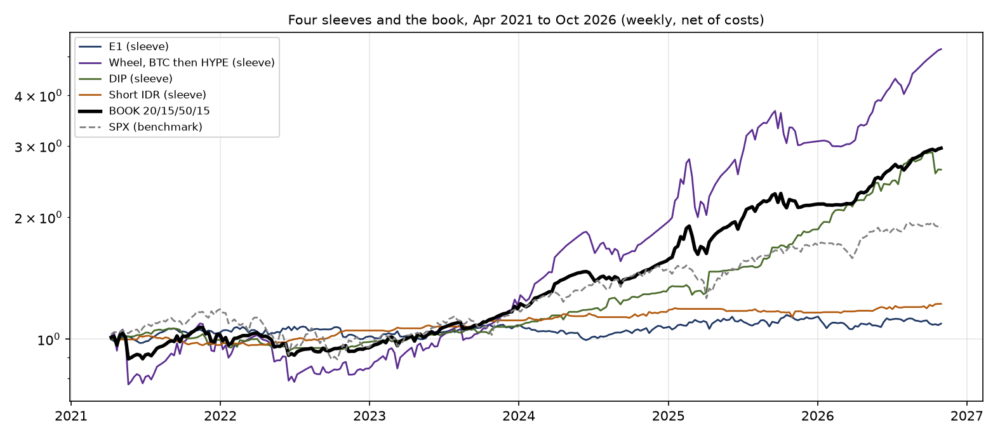
• Correlations: E1–DIP −0.09, E1–IDR −0.05, E1–Wheel −0.03, DIP–IDR −0.08, DIP–Wheel +0.15, IDR–Wheel −0.09
• Grey dashed: S&P 500, +88.6% with a −24.8% drawdown; book +196.4%, −14.9%
• Exhibits: A5 · A7 · A6
*Sharpe = annualised mean weekly return ÷ standard deviation, no risk-free rate deducted (all rows); net of T-bills (avg 3.4%): book 1.16, SPX 0.58.
Mixing the four is what makes the book work: Sharpe 1.39, max drawdown −14.9% against the S&P 500's −24.8%, −7.3% in 2022 against −19.4%, and +1.42% in an October when the dip sleeve lost 9.3%.
8
SPEAKER 4 · MICHAEL
LIVE WINDOW · OPERATIONS
Operating plan
How the book is run
- Rules were fixed on 1 Oct; the three changes since are listed on the right
- Every Friday close: a one-page report per sleeve and for the book
- Brake: if the book is 5% below its peak, cut every position in half; at 8%, stop and review
- Lowest point in October: −0.1%, on 1 Oct
Reporting- The brief's nine metrics, per sleeve and for the book, with trade counts beside each
- Weeks of live data show whether we follow the rules, not whether the edge is real
Freeze log (three changes)- 15 Oct: a trend-following futures sleeve was replaced by dip buying (A3)
- 22 Oct: E1 rerun with full trading costs
- 31 Oct: an Indonesian commodity-stock sleeve was replaced by short IDR; HYPE added to the wheel from 2025, with the 200-day rule; weights set to 20/15/15/50
Brake in the backtest- The book was 5% or more below its peak in 108 of 291 weeks (12 separate episodes); it hit −8% in 2021, 2022 and Mar 2025
The operating rhythm
DAILYCheck E1 signals and dip triggers. Trade only what the rules say; log every fill.
WEEKLYFriday: the wheel sells next week's HYPE and BTC options. Short IDR forwards roll once a month.
QUARTERLYReset the book to 20 / 15 / 15 / 50 and the wheel to 70 / 30 HYPE / BTC. No weight changes in between.
FRIDAY CLOSEOne-page report per sleeve and for the book: the brief's metrics, with trade counts.
The brake, as a gauge
−14.9% backtest low with no brake, past the stop ▶
0% to −5% · full size
−5% · half size
−8% · stop and review
What October tested was whether we follow our own rules: fixed rules, a report every Friday, and a brake the book never came near (lowest point −0.1%).
9
SPEAKER 5 · VICTORIA
HONESTY · LIMITATIONS
Limitations, stated plainly
E1- Uses today's 34 names for the whole history
- Its edge is fading, and we show that rather than hide it
Dip- Uses today's Nasdaq-100 for the whole history: its Sharpe is an upper bound
- Position sizing rebuilt from the published rules
Short IDR- Carry is a flat 3%/yr assumption, not real forward points
- The dollar filter is one rule tested on the same history it is judged on
Book- Only 5.5 years of history; no 2008- or 2020-style crash
- HYPE has 22 months of data, mostly in a rising market
- The wheel is half the book, so its tail is the book's tail
Where each sleeve is most exposed
Synthetic / estimated inputs
Costs & frictions
Edge decay
Tail / regime break
E1 · Mean reversion
Wheel · BTC / HYPE
Short IDR · FX
Dip · NDX reversal
Severity:
High
Med
Low
10
SPEAKER 5 · VICTORIA
RISK · PRE-COMMITMENT
Kill criteria, pre-committed
| Sleeve | Kill rule |
|---|
| E1 | Stop if live profit per trade is negative after 200 trades, or if the freeze log shows a parameter change. |
| Wheel | Stop if cumulative assignment losses exceed the trailing two years of premium collected. |
| Short IDR | Stop if the sleeve's live drawdown exceeds −10%, beyond its full-history backtest maximum (−9.4% since 2015; −5.4% on the common window). |
| Dip | Stop if sleeve drawdown exceeds −13%, beyond its backtest maximum of −12.2% (long run; −11.6% since 2024): the design has no stop loss, so the drawdown limit is the stop. |
| Book | The −8% brake is the kill criterion for the combination itself. |
The book brake, on one line
0% to −5%: full size
−5%: half size
−8%: stop and review
• Backtest max drawdown without the brake: −14.9%, on 14 Mar 2025 (the HYPE crash)
• The −8% stop sits inside it, so a repeat is cut at the stop
Four sources of return in one book, each sized by how much it can lose,
with the rules fixed in advance and reported the way we would want to read them.
11
CONCLUSION
What we built, and what would change our minds
1 · Four sources of return, none of them dominant• Correlations −0.09 to +0.15; book equity beta +0.16
• Two sleeves lose when markets fall; measured over 291 weeks
2 · The book holds when its parts fall• Sharpe 1.39 vs 0.23 to 1.46 for the sleeves
• 2022: −7.3% vs −19.4% for the S&P 500; Oct 2026: +1.42% while dip lost 9.3%
• −14.9% drawdown in the Mar 2025 HYPE crash: the wheel is return and risk
3 · Seven designs dropped, all listed in A3• A regime-timed wheel, a commodity-stock sleeve with its two filters, and a trend-futures sleeve failed or were replaced
• Trend filters on the rupiah and a one-coin wheel rule were rejected
4 · Sized by what can go wrong, fixed in advance• The wheel has the worst tail (A7), so the brake is set before it is needed
What would change our minds: a sleeve breaking its kill rule live. We stop it and report it.
The book: Apr 2021 to Oct 2026, 100 → 296.
THE HOOK, ANSWERED
Crypto winterWheel −28% vs −74%
Rate shock 2022Book −7.3% vs SPX −19.4%
Yen unwindBook −0.6%
Tariff shockBook +3.6%
October 2026Book +1.42% (+18.7%/yr)
We are not claiming to have found four sure edges. We are claiming to have built a book that survives being wrong about one of them.
12
APPENDIX A1 · SPECIFICATIONS
Purpose: The exact rules of every sleeve, fixed in advance, so nothing can be changed quietly
Frozen specification sheet
| Sleeve | Specification |
|---|
| E1 | 3 PCA factors on a 60-day window. Open a trade when the s-score passes ±1.5, close when it comes back inside ∓0.5, stop if |s| passes 3.5. Only names whose residual half-life is 30 days or less. 34 names (9 SGX, 25 US). 10 bps charged on every change in position weight (entries, exits, daily rebalancing). |
| Wheel | Every Friday, sell a 1-week option at 25 delta: a put when holding no coin, a call when holding it. Cash fully covers the put and earns the T-bill rate; premium is cut by 5%. BTC only to 3 Jan 2025, priced at Deribit's DVOL; from then 70% HYPE / 30% BTC, rebalanced each quarter, HYPE priced at its 30-day realised vol. If a coin closes a Friday below its own 200-day average, its leg runs the next week at half size (BTC) or sits in T-bills (HYPE), and goes back to full size once the coin closes above. |
| Coin screen | How we pick the wheel's second coin: the protocol spends its own revenue buying the token back; no large VC or insider supply waiting to unlock; real fee-paying usage; enough spot liquidity to trade every week. HYPE passes (fees fund buybacks). BTC has no protocol revenue, so it stays as the liquid core (A9). |
| Short IDR | Long USD/IDR at 1× through rolling 1-month forwards, held only while the dollar index's 21-day return is positive (checked at each close, applied the next day). Returns in USD. Carry of 3.0% a year (the assumed IDR–USD rate gap) while on, plus 3 bps per roll and 5 bps per switch. No stop apart from the kill rule. |
| Dip | Nasdaq-100 (101 current names), only those above their 200-day average. Signal: a 1-day drop of more than 3% with ATR(5)/close above 3%. Next day, a limit buy at the signal close minus 0.9×ATR(5); candidates ranked by ATR(5)/close. At most 10 positions, each a tenth of the prior-close equity (reconstructed). Exit at +0.5×ATR, on a close above the prior day's high, or on day 11. No stop loss. IBKR tiered commissions. |
| Book | 20/15/15/50 (E1/dip/short IDR/wheel), rebalanced each quarter. Brake: halve every position at a −5% book drawdown, stop at −8%. |
FROZENFinal specification, fixed Oct 2026; three changes logged (slide 9)
→
LIVE WINDOWOct 2026; final tear sheet at the 30 Oct close
→
NO SILENT CHANGESEvery change goes in the freeze log, with the reason
13
APPENDIX A2 · ROBUSTNESS
Purpose: Show the Sharpe ratios are not driven by a few lucky weeks or by one parameter
Robustness (common window, weekly)
| Sharpe | Newey–West | Drop best week |
|---|
| E1 | 0.23 | 0.28 | 0.16 |
| DIP | 1.46 | 1.58 | 1.42 |
| Short IDR | 0.86 | 1.07 | 0.77 |
| Wheel | 1.17 | 1.25 | 1.11 |
| BOOK | 1.39 | 1.48 | 1.33 |
| SPX | 0.80 | 0.85 | 0.74 |
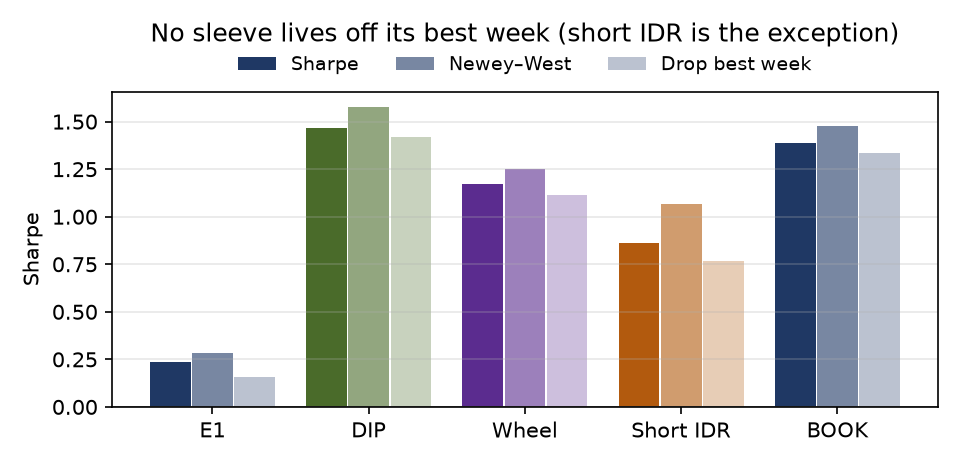
- Dropping each sleeve's best week changes little: short IDR moves most (0.86 to 0.77), the book goes from 1.39 to 1.33
- The Newey–West Sharpe, which corrects for one week's return depending on the last, is higher in every row: weekly returns tend to reverse slightly
- E1 does best with the 3 factors we use: Sharpe 0.43 / 0.67 / 0.48 / 0.26 with 2 / 3 / 4 / 5 factors
- Opening E1 trades at 1.75 instead of 1.5 lifts the Sharpe to 0.99 but deepens the drawdown to −14.8% from −9.1%; tested but not used
14
APPENDIX A3 · REJECTION LOG
Purpose: Record what we tried and rejected, with the numbers that decided it
What we tested and dropped
| Candidate | Evidence |
|---|
| Trend-following futures sleeve (built, then replaced) | Worked as designed (Sharpe 0.34; 2022 +17.4%), then replaced as Sleeve 4 by dip buying, which has the stronger record (1.07 long run). The cost: the book no longer shorts bonds or the dollar. |
| Regime-timed wheel (first design) | Sold puts only below the 200-day average and calls only above it: Sharpe 0.63 vs 1.14 always-on; 2022 −60.7% vs −32.0%. Once it was assigned the coin it sold nothing and held through the bear market. Replaced by the always-on wheel. |
| Indonesian commodity-equity sleeve | Coal and nickel names, Sharpe 1.11 (IDR, 2016–2026); a palm-oil basket and a positioning-based brake tested inside it had already failed. Replaced by short IDR in the same slot at the 31 Oct review. |
| Trend filters on USD/IDR itself | Holding the short only when USD/IDR is above its own 20- to 200-day average, or rising on its own momentum: Sharpe −0.4 to −0.9 (2015–2026) against 0.02 for always on. USD/IDR spikes and then falls back, so following its own trend means buying at the top. Replaced by the dollar filter (Sharpe 0.55). |
| One-coin wheel trend rule | Testing the 70/30 blend against a single 200-day average and halving the whole wheel: book Sharpe 1.42 and CAGR 15.8% (at 35/15/15/35), against 1.47 and 16.5% when each coin is tested against its own average. Taking both coins out fully scored 1.43 and 14.8%. So BTC keeps half a position to catch its rebounds, and HYPE, the thinner coin, exits. |
| Pairs trading | Set aside before testing as too well known; the PCA engine covers the same idea more generally. |
6Entries in this log
5Dropped or replaced
1Set aside untested (pairs)
0Dropped designs still in the book
15
APPENDIX A4 · DATA & PROTOCOLS
Purpose: Where the data comes from, and how we keep future information out of past decisions
Data, and how we avoid look-ahead
Sources- Prices: Yahoo Finance (equities, BTC, HYPE, USD/IDR, dollar index, gold)
- Two missing HYPE days filled from Hyperliquid candles
- Option vol: Deribit DVOL for BTC; 30-day realised for HYPE
- FX carry: 3.0%/yr assumed · Rates: 13-week T-bill
How we avoid look-ahead- Every signal uses only data available at the close when the decision is made
- Trades go through at that close or the next session, depending on the sleeve
- Each Friday's option priced at the vol known that day
- One exception we cannot fix: dip and E1 use today's index members (slide 10)
SOURCESYahoo prices · Deribit DVOL · Hyperliquid candles · T-bill rate
→
RULESsignals from data available at the decision close; costs and carry charged per sleeve
→
OUTPUTa Friday report: the brief's nine metrics, per sleeve and for the book
16
APPENDIX A5 · ALLOCATION
Purpose: Show what other weightings would have given, and why we chose ours anyway
Why these weights (sensitivity)
- Weights reset on 31 Oct, when short IDR took the commodity sleeve's slot
- Risk parity (equal risk from each sleeve, on vols of 8.1% / 12.3% / 4.3% / 28.9%) would give about 26/17/49/7
- We moved away from that because E1's edge is fading, short IDR earns little on its own, and the wheel carries the return
E1
20%
Short IDR
15%
Dip
15%
Wheel
50%
| Weights (E1/Dip/IDR/Wheel) | Sharpe | CAGR | Vol | Max DD | Oct 2026 (ann.) |
|---|
| Chosen 20/15/15/50 | 1.39 | 21.4% | 14.8% | −14.9% | +1.42% (+18.7%) |
| Risk parity ≈26/17/49/7 | 1.96 | 8.1% | 4.0% | −3.3% | −0.5% (−6.2%) |
| Equal weight 25 each | 1.72 | 15.0% | 8.3% | −8.3% | −0.7% (−8.3%) |
| Earlier slots 40/20/25/15 | 1.73 | 10.7% | 6.0% | −4.9% | −0.8% (−9.8%) |
- Every alternative has a higher Sharpe and shallower drawdown, and every one lost money in October
- We give that up for the highest return and a positive October, with more riding on the wheel
17
APPENDIX A6 · LECTURE: FACTOR MODELS
Purpose: Prove the four sleeves earn their returns from different sources
Factor attribution: the four returns come from different places
| Weekly return betas | SPX | Coin | Gold | USD/IDR | R² |
|---|
| E1 | +0.01 | −0.01 | −0.04 | −0.18 | 0.03 |
| DIP | +0.18 | +0.02 | +0.09 | +0.12 | 0.10 |
| Short IDR | −0.01 | −0.00 | −0.01 | +0.42 | 0.46 |
| Wheel | +0.25 | +0.32 | +0.00 | +0.34 | 0.55 |
| BOOK | +0.16 | +0.16 | +0.00 | +0.21 | 0.55 |
Each sleeve's weekly returns regressed on the S&P 500, the wheel's coin (BTC to Jan 2025, then 70/30 HYPE/BTC), gold and USD/IDR over the common window (Apr 2021 to Oct 2026, 291 weeks). Bold: |t| > 2.6. Darker cells mean a larger beta.
- E1 moves with none of the four (R² 0.03); this is measured, not assumed
- Book equity beta +0.16: +0.13 from the wheel (0.25 × 50%), +0.03 from dip (0.18 × 15%)
- The wheel's coin beta is +0.32 (t = 17): it gains less than the coin when the coin rises, and the 200-day rule means it keeps less of the fall
- Short IDR's USD/IDR beta of +0.42 is roughly its 52% time in the market; it has no equity or crypto beta
18
APPENDIX A7 · LECTURE: RISK & EVT (L7)
Purpose: Measure how bad a one-in-a-hundred week is for each sleeve and for the book
Tail risk: one-week 99% VaR and Expected Shortfall
| Losses, % of sleeve capital | VaR (hist) | ES (hist) | VaR (EVT) | ES (EVT) | Tail ξ |
|---|
| E1 (20%) | 2.8 | 3.8 | 3.1 | 3.8 | −0.03 |
| DIP (15%) | 4.1 | 6.9 | 4.5 | 6.7 | +0.13 |
| Short IDR (15%) | 1.2 | 1.8 | 1.5 | 1.9 | +0.00 |
| Wheel (50%) | 11.5 | 17.3 | 13.2 | 16.9 | −0.03 |
| BOOK | 5.7 | 8.4 | 6.6 | 8.4 | −0.06 |
Two estimates of the worst week in a hundred: the historical quantile of weekly returns, and an extreme-value fit to the worst 10% of weeks (generalised Pareto, 29 weeks; the tail index ξ is rough). Common window.
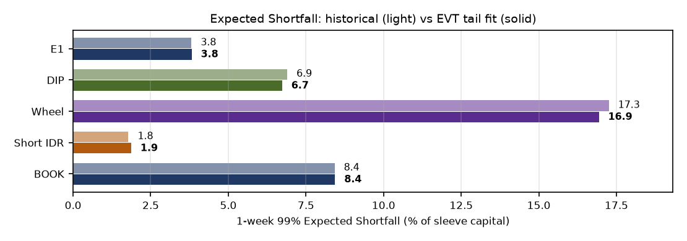
- The wheel is the tail risk: in its worst 1% of weeks it loses about 17% of its capital
- At 50% weight it is the book's tail
- Both methods agree for the book: about 8.4%
- Dip's tail got worse in October (−11.2% in the chip week)
- Worst book week: −11.5% on 21 May 2021, which would have hit the brake's stop
19
APPENDIX A8 · LECTURE: COINTEGRATION
Purpose: Show why E1's residuals can be traded while simple stock pairs cannot
Cointegration: a beta alone is not enough
| Pair | β | EG p | Spread HL |
|---|
| DBS vs OCBC | 1.20 | 0.45 | 107d |
| OCBC vs UOB | 1.29 | 0.82 | 285d |
| JPM vs BAC | 1.39 | 0.65 | 186d |
| XOM vs CVX | 1.40 | 0.01 | 44d |
| V vs MA | 0.95 | 0.01 | 35d |
| PG vs PEP | 0.96 | 0.75 | 153d |
Daily log prices of E1 names, Jan 2019 to Oct 2026. β is the slope of one log price on the other; EG p is the Engle–Granger test p-value (small means the pair is tied together); HL is how many trading days the spread takes to close half its gap.
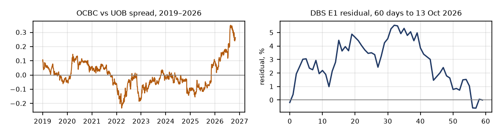
Engle–Granger- Only 2 of 6 pairs are tied together (XOM/CVX, V/MA, p ≈ 0.01)
- Even those take 35 to 44 trading days to close half the gap
- The bank pairs are not tied at all
Contrast, Sleeve 1- E1's residuals close half their gap in 5.5 days on median (3.6 to 8.2) over 93 windows
- Well inside the 30-day limit: fast enough to trade
- A stationarity test on a single 60-day window flags only 9% of cases: it has little power on short windows
Sleeve 4, used defensively- Buys only above the 200-day average
- 2022: −1.2% while mostly in cash
20
APPENDIX A9 · TOKENOMICS SCREEN
Purpose: The criteria that put HYPE into the wheel, and what BTC is still there for
Why HYPE: the coin screen behind the wheel's 2025 switch
| Criterion | Why it matters for a wheel | HYPE | BTC |
|---|
| 1. Revenue-funded buybacks | The protocol's fees buy the token: a steady buyer under the price, so puts get assigned less deep | Pass: exchange fees fund ongoing HYPE buybacks | Fail: no protocol revenue |
| 2. Low insider overhang | Big VC or team unlocks mean forced selling, straight into the wheel's puts | Pass: no VC round; a large share went to users at launch | Pass: no insider unlocks |
| 3. Real usage | Fee-paying demand, not only speculation | Pass: a leading perpetuals exchange by volume | Store of value; no fees to the token |
| 4. Liquidity | The wheel must trade weekly, at size | Pass on spot; options market still thin | Pass: the deepest crypto options market |
| 5. Premium | Higher volatility means more premium per week | About twice BTC's volatility | Lower, but with a real implied-vol index (DVOL) |
How we use it
- Pass/fail on criteria 1 to 4; criterion 5 sets the weight
- Jan 2025: HYPE passes all four, so it takes 70% of the wheel
- BTC fails buybacks but stays at 30%: deepest liquidity and a real implied-vol index
- Rebalanced to 70/30 each quarter with the book
Result and caveats
- October 2026: HYPE wheel +6.6% vs BTC wheel +2.3%; the 70/30 wheel +5.3%
- One screen, one date, one candidate: a judgement call, not a backtest
- HYPE has 22 months of history, mostly in a rising market
- The 30% BTC leg is the hedge against the screen being wrong
The screen in one line: prefer tokens whose own revenue buys them back, with no insider supply waiting to be dumped, and hold BTC as the liquid core.
21
APPENDIX A10 · MONTE CARLO FORWARD TEST
Purpose: Estimate the range of outcomes for the HYPE leg over the next 4 and 13 weeks
The HYPE leg over the next 4 and 13 weeks: 2,000 forward paths
74%Paths up after 4 weeks
+4.3%Median 4-week return
−10.6%Bad case (5th percentile), 4 weeks
+35%/yrAnnual rate, 13-week paths
80%Past outcomes in the 5 to 95% band
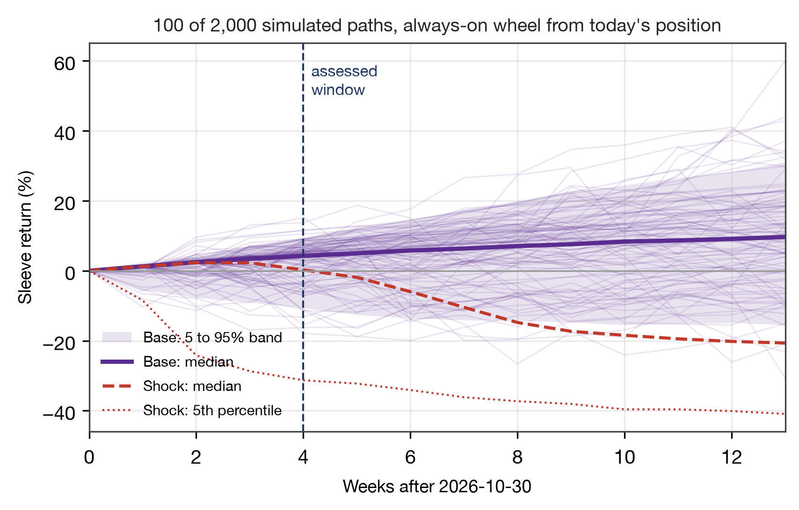
| Scenario | 4wk median | 4wk up | 13wk median | 13wk 5th pct | Per year |
|---|
| Base | +4.3% | 74% | +9.7% | −15.5% | +35% |
| Noise | +3.6% | 70% | +6.3% | −19.3% | +18% |
| Shock | +0.2% | 50% | −20.7% | −40.9% | −60% |
| History | +8.8% | 76% | +23.9% | −21.9% | +118% |
- Paths: HYPE's past daily moves, resampled in 20-day blocks (Dec 2024 to Oct 2026) and scaled to current vol
- Start: live position, short a $85.42 put, HYPE $89.96
- Noise: options priced at 0.83 to 1.0 × vol, fills at 85 to 95% of model price
- Shock: worst 7 days (−31%) replayed once
- Calibration: on 15 past dates, 80% of outcomes landed inside the 5 to 95% band (target 90%); every miss was on the upside
Most likely outcome: it keeps working. 74% of HYPE-leg paths are up after 4 weeks; the whole 20/15/15/50 book is up in 73% (median +2.1%). The risk is a crash week: −21% HYPE-leg median at 13 weeks in the shock case.
22